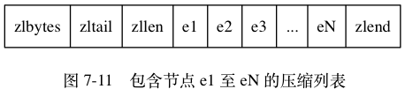

压缩列表 #
压缩列表（ziplist）是列表键和哈希键的底层实现之一。
当一个列表键只包含少量列表项，并且每个列表项要么就是小整数值，要么就是长度比较短的字符串，那么 Redis 就会使用压缩列表来做列表键的 底层实现。
比如：
redis> RPUSH lst 1 3 5 10086 "hello" "world"
(integer) 6
redis> OBJECT ENCODING lst
"ziplist"
因为列表键里面包含的都是 1 、 3 、 5 、 10086 这样的小整数值，以及 “hello” 、 “world” 这样的短字符串。
当一个哈希键只包含少量键值对，并且每个键值对的键和值要么就是小整数值，要么就是长度比较短的字符串，那么 Redis 就会使用压缩列表来做 哈希键的底层实现。
redis> HMSET profile "name" "Jack" "age" 28 "job" "Programmer"
OK
redis> OBJECT ENCODING profile
"ziplist"
压缩列表的构成 #
压缩列表是 Redis 为了节约内存而开发的，由一系列特殊编码的连续内存块组成的顺序型（sequential）数据结构。
压缩列表的各个组成部分：

zlbytes，uint32_t，4 字节，记录整个压缩列表占用的内存字节数：在对压缩列表进行内存重分配，或者计算zlend的位置时使用。zltail，uint32_t，4 字节，记录压缩列表表尾节点距离压缩列表的起始地址有多少字节：通过这个偏移量，程序无须遍历整个压缩列表就可以确定表尾节点的地址。zllen，uint16_t，2 字节，记录了压缩列表包含的节点数量：当这个属性的值小于UINT16_MAX（65535）时，这个属性的值就是压缩列表包含节点的数量； 当这个值等于UINT16_MAX时，节点的真实数量需要遍历整个压缩列表才能计算得出。entryX，压缩列表包含的各个节点，节点的长度由节点保存的内容决定。zlend，uint8_t，1 字节，特殊值0xFF（十进制 255 ），用于标记压缩列表的末端。
压缩列表节点的构成 #
压缩列表节点组成：

每个压缩列表节点可以保存一个字节数组或者一个整数值，其中，字节数组可以是以下三种长度的其中一种：
- 长度小于等于 63 （
2^{6}-1）字节的字节数组 - 长度小于等于 16383 （
2^{14}-1） 字节的字节数组 - 长度小于等于 4294967295 （
2^{32}-1）字节的字节数组
而整数值则可以是以下六种长度的其中一种：
- 4 位长，介于 0 至 12 之间的无符号整数；
- 1 字节长的有符号整数；
- 3 字节长的有符号整数；
int16_t类型整数；int32_t类型整数；int64_t类型整数。
previous_entry_length #
previous_entry_length 属性以字节为单位，记录了压缩列表中前一个节点的长度。长度可以是 1 字节或者 5 字节：
- 如果前一节点的长度小于 254 字节， 那么
previous_entry_length属性的长度为 1 字节：前一节点的长度就保存在这一个字节里面。 - 如果前一节点的长度大于等于 254 字节， 那么
previous_entry_length属性的长度为 5 字节：其中属性的第一字节会被设置 为0xFE（十进制值 254），而之后的四个字节则用于保存前一节点的长度。
因为节点的 previous_entry_length 属性记录了前一个节点的长度，所以程序可以通过指针运算，根据当前节点的起始地址来计算出前一个节点
的起始地址。
举个例子，如果我们有一个指向当前节点起始地址的指针 c ，那么我们只要用指针 c 减去当前节点 previous_entry_length 属性的值，就可以
得出一个指向前一个节点起始地址的指针 p 。
压缩列表的从表尾向表头遍历操作就是使用这一原理实现的：只要我们拥有了一个指向某个节点起始地址的指针，那么通过这个指针以及这个节点
的 previous_entry_length 属性，程序就可以一直向前一个节点回溯， 最终到达压缩列表的表头节点。
encoding #
encoding 属性记录了节点的 content 属性所保存数据的类型以及长度：
- 一字节、两字节或者五字节长，值的最高位为 00 、 01 或者 10 的是字节数组编码：这种编码表示节点的
content属性保存着字节数组，数 组的长度由编码除去最高两位之后的其他位记录 - 一字节长，值的最高位以 11 开头的是整数编码：这种编码表示节点的
content属性保存着整数值，整数值的类型和长度由编码除去最高两位 之后的其他位记录
| 编码 | 编码长度 | content属性保存的值 |
|---|---|---|
00bbbbbbbb |
1 字节 | 长度小于等于 63 字节的字节数组。 |
01bbbbbbbb xxxxxxxx |
2 字节 | 长度小于等于 16383 字节的字节数组。 |
10______ aaaaaaaa bbbbbbbb cccccccc dddddddd |
5 字节 | 长度小于等于 4294967295 的字节数组。 |
11000000 |
1 字节 | int16_t 类型的整数。 |
11010000 |
1 字节 | int32_t 类型的整数。 |
11100000 |
1 字节 | int64_t 类型的整数。 |
11110000 |
1 字节 | 24 位有符号整数。 |
11111110 |
1 字节 | 8 位有符号整数。 |
1111xxxx |
1 字节 | 长使用这一编码的节点没有相应的 content 属性， 因为编码本身的 xxxx 四个位已经保存了一个介于 0 和 12 之间的值，所以它无须 content 属性。 |
content #
content 属性负责保存节点的值，节点值可以是一个字节数组或者整数。
连锁更新 #
考虑这样一种情况： 在一个压缩列表中， 有多个连续的、长度介于 250 字节到 253 字节之间的节点 e1 至 eN ： 
e1 至 eN 的所有节点的长度都小于 254 字节，所以记录这些节点的长度只需要 1 字节长的 previous_entry_length 属性，
换句话说， e1 至 eN 的所有节点的 previous_entry_length 属性都是 1 字节长的。
如果将一个长度大于等于 254 字节的新节点 new 设置为压缩列表的表头节点，那么 new 将成为 e1 的前置节点，因为 e1 的 previous_entry_length 属
性仅长 1 字节，它没办法保存新节点 new 的长度 所以程序将对压缩列表执行空间重分配操作，并将 e1 节点的 previous_entry_length 属性从
原来的 1 字节长扩展为 5 字节长。
e1 原本的长度介于 250 字节至 253 字节之间， 在为 previous_entry_length 属性新增四个字节的空间之后，e1 的长度就变成了介于 254 字
节至 257 字节之间，而这种长度使用 1 字节长的 previous_entry_length 属性是没办法保存的。e2 节点的 previous_entry_length 属性
也要从原来的 1 字节长扩展为 5 字节长。
扩展 e1 引发了对 e2 的扩展一样，扩展 e2 也会引发对 e3 的扩展，直到 eN 为止。
Redis 将这种在特殊情况下产生的连续多次空间扩展操作称之为连锁更新。
连锁更新的复杂度较高， 但它真正造成性能问题的几率是很低的：
- 首先， 压缩列表里要恰好有多个连续的、长度介于 250 字节至 253 字节之间的节点， 连锁更新才有可能被引发， 在实际中， 这种情况并不多见；
- 其次， 即使出现连锁更新， 但只要被更新的节点数量不多， 就不会对性能造成任何影响： 比如说， 对三五个节点进行连锁更新是绝对不会影响 性能的；